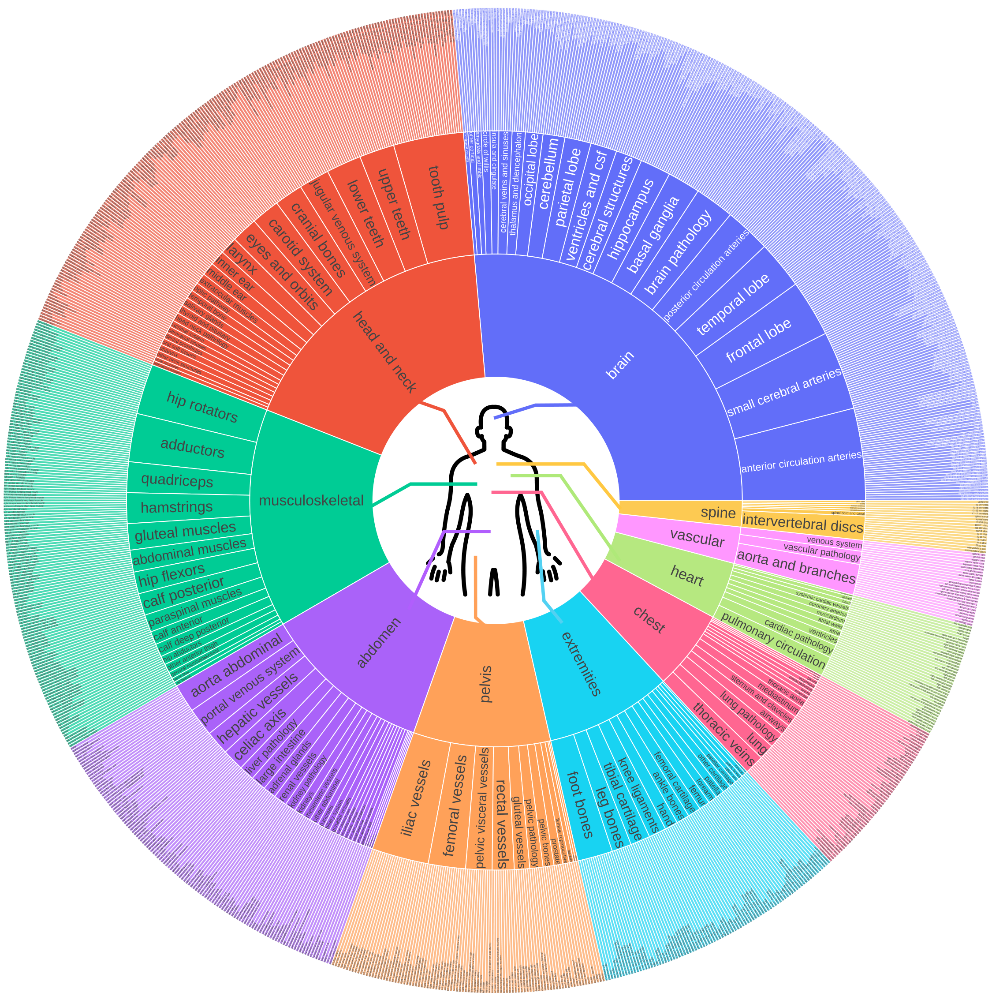
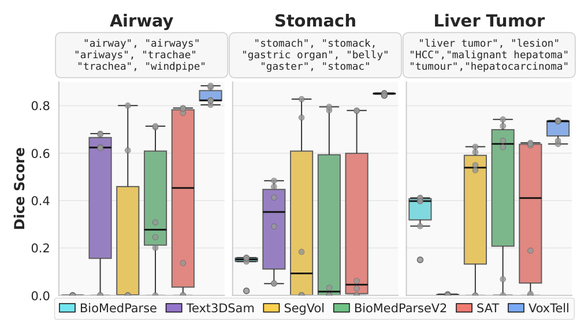
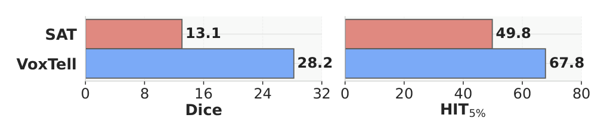
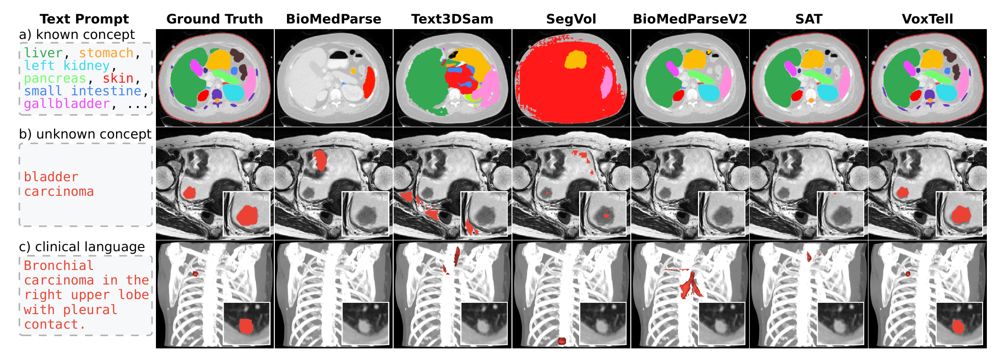

VoxTell 深读：文本提示 3D 医学分割，为什么“每个尺度都融一次”胜过“最后点积一次”？
导读。VoxTell 真正要回答的问题，不是“能不能用一句话去分割 CT/MRI/PET”，而是：临床文本几乎从不是“肝”这种单词，而是“右肺下叶伴胸膜接触的毛刺癌”“两侧肝叶大小不等的低密度灶”——它把空间定位、语义关系、甚至拼写错误都揉进一句话里。可主流的 MaskFormer 范式（SAT、BioMedParse）只在解码器最末端做一次 query·image 点积，图像骨干在见到这句话之前就已经把特征定型了。那么，要让模型对“右肺”而非“左肺”作出反应，文本到底应该在解码的哪一步注入？VoxTell 的答案干脆利落：别等到最后——在 UNet 解码器的每一个分辨率上都融一次，再配上每尺度的深监督。这就是这篇 DKFZ（nnU-Net 同门）工作的立题。

1. 核心问题：临床文本是“带定位的句子”，末端点积为何接不住？
体素级分割是诊断与治疗计划的基石，但绝大多数方法被锁死在特定结构或特定模态上。SAM 范式用空间提示（点、框、涂鸦）做到了“万物可分”，MedSAM 等医学改编也跟进；但空间提示要人手动点，且无法利用现成的放射报告。文本提示则是更自然的临床接口：直接描述解剖/病理，或干脆把报告丢进去。
问题在于，现有文本引导医学分割模型（SAT、BioMedParse 系列）更像“用文本去选一个预定义分割头”的多任务网络：它们对措辞、同义词、拼写极其敏感，从单词标签（“liver”）一跨到复杂临床描述（“calcified nodules in right lung parenchyma”），性能就塌——而这恰恰是文本提示最该发光的场景。
问：那把 SAT 这类模型多喂点同义词、多训几个数据集，不就能handle 复杂 prompt 了吗？
引导：盯住它们的融合位置——MaskFormer 范式里，最终掩码是 query 特征与通用图像特征的一次点积。图像骨干在整个前向里从没“听到”过这句 prompt。
答：论文的论点是结构性的，不是数据量问题。“lesion in right lung”这种空间定位 prompt，靠一个在体积上滑动的、共享的分割头根本接不住——它无法对“右”这个空间约束自适应，因为空间结构早在骨干里被烘焙成了 prompt-无关的语义图。第 5 节会从两条独立路径把这点钉死；这里先记住：难的不是“认词”，是“让文本去重塑空间响应”。
Takeaway：核心问题是“文本应在解码的哪一步、注入几次”——VoxTell 赌的是“早注入、反复注入”，而非“末端一次性融合”。
2. 贡献拆解：作者明确提出了什么？
作者明确提出的贡献：
- VoxTell——一个把自由文本（含整句临床描述）直接映射到体积掩码的 3D 文本提示分割模型。
- 多尺度视觉-语言融合——在解码器多个尺度反复做跨模态交互，改善文本与体积特征的对齐（这是与 SAT/MaskFormer“单次末端融合”的关键分野）。
- SoTA 文本提示分割——在 CT、PET、MRI 多结构上验证，超过此前文本引导分割模型。
- 迈向开集泛化——对模态漂移与“相关但未见”结构均有效。
读数提醒：这篇的“评测设定”本身就是一个贡献
多数文本提示基线用同分布 train/test split刷分（训练和测试是同一批数据/结构）。VoxTell 反其道：只在未见数据集（OOD 图像）上评测，且覆盖“已知概念 + 新概念 + 已知概念换模态”三种情形。所以它报告的所有数字都该按“零样本 / 留出域”理解——这让 70.85 vs 51.23 的差距比同分布刷分更有说服力。
读者能进一步推断的是：这篇的价值不在“又一个医学分割基础模型”，而在它把“融合位置”这一个架构变量单独拎出来、用消融证明它（而非数据或文本编码器）是处理复杂 prompt 的瓶颈。下面第 5、8 节会把这条因果链走两遍。
3. 数据与词表：62K 体积、1087 概念，以及“把标签写成人话”
为训练和评测 VoxTell，作者整理了一个大规模多模态 3D 语料：158 个公开数据集、62K+ 体积扫描（≈4 TB）、1087 个解剖与病理概念，覆盖 CT、多序列 MRI、PET，含健康与病理解剖。论文称其在数据集数上是此前最大汇编（SAT 语料）的两倍多、体积数近三倍。每个数据集留 5% 作验证（消融全在此 split 上做），保证测试完整性。
{kind=link}

3.1 词表构建：让“right kidney”能被“dexter kidney”“right renal organ”命中
关键不在于收了多少标签，而在于把标签语义抹平。流程三步：(1) 跨数据集消歧——统一同义/重叠类名，解决“liver 是否含病灶”这类同名不同义；(2) 标签扩展——用 LLM 依据数据集元信息生成解剖学精确的变体（“right kidney” → “right renal organ”“dexter kidney”），并组合层级聚合体（“left rib 1”–“left rib 12” → “left rib cage”）；(3) 验证。最终词表 1087 个统一概念、9682 个改写标签，训练时采样但以主词为主（用“liver”多于“hepatic organ”）。
问：这套“同义词扩展”到底是工程润色，还是机制必需？
答：它是后面“prompt 鲁棒性”（图 3）能成立的数据侧前提。一个强文本编码器（Qwen3-Embedding-4B）固然能把“trachea/windpipe/airways”映射到相近嵌入，但若训练时从没见过这些写法与同一掩码配对，模型就学不到“这些不同写法 → 同一空间目标”的不变性。词表扩展 + 强编码器是互补的两半：编码器给嵌入的连续性，扩展给“写法→目标”的监督覆盖。第 8 节附录 D 的编码器消融正是用来切开这两半的贡献。
Takeaway：“把标签写成人话再训练”不是数据清洗的边角料，而是 VoxTell 能对同义词/拼写错误稳健的根。
3.2 实例级数据：为“定位单个病灶”而生
语义数据集只告诉模型“哪是肝”，不告诉“哪一个病灶”。为处理实例级、带空间定位的 prompt，作者额外组了一个实例聚焦数据集，用于 ReXGroundingCT 基准，来源三股：(i) ReXGroundingCT 官方训练 split（把报告 findings 链接到精确 3D 分割）；(ii) 用 TotalSegmentator 把语义病灶数据集转成实例级标注；(iii) 带结构化 DICOM 元信息的 TCIA 合集。在 ReXGroundingCT 上评测时，VoxTell 与对手都在该数据上微调，以公平评估实例级定位。
4. Pipeline 与架构：两条流，在解码器里反复交汇
图 2 是矢量图，这里转写为结构化流程（论文 Fig. 2）。VoxTell 灵感源自 MaskFormer，但刻意采用 UNet 风格骨干（ResEncL，6 个编码器阶段）而非纯 Transformer——理由是 UNet 系在 3D 医学分割上持续领先 Transformer（Touchstone 等大规模基准与近年挑战赛）。两条流：
3D 体积 $V$
↓ ResEncL UNet 编码器 $f_{enc}$
多尺度特征 $Z=\{z_1,\dots,z_S\}$
↓ UNet 解码器 $f_{dec}$（粗→细）
每尺度：skip 连接 + 上一层上采样
自由文本 $p$（词 → 整句）
↓ 冻结 Qwen3-Embedding-4B $f_{text}$
prompt 嵌入 $q$
↓ 6 层 Transformer prompt 解码器 $f_{prompt}$
多尺度文本引导 $T=\{T_1,\dots,T_S\}$
通道级点积 $T_s\odot z'_s$ → 把文本调制拼回中间特征 → 卷积 → 上采样
每尺度还挂一个分割头 $\hat Y_s$ 做深监督
为什么坚持 UNet 而不是全 Transformer？
这是一个被动机驱动的选择：2D 分割里 Transformer 占优，但 3D 医学体积上 UNet 系仍是 SOTA。VoxTell 把文本条件直接注入 UNet 的多尺度特征图，确保 prompt 信息影响的是中间表示，而不是只作用在输出阶段。换句话说，它没有为了“赶时髦用 Transformer”而牺牲 3D 分割本身的强先验。
5. 方法：多尺度融合 + 深监督，为什么能接住“右肺”？
5.1 形式化：从编码到每尺度的文本调制
设 $V\in\mathbb{R}^{H\times W\times D}$ 为输入体积，UNet 编码器抽取多尺度特征：
自由文本 $p$ 经冻结文本编码器得 $q=f_{text}(p)\in\mathbb{R}^d$（式 2）。一个 Transformer prompt 解码器以 $q$ 为 query、瓶颈特征 $z_S$ 为 key–value，输出经各尺度专用 MLP 投影成多尺度文本引导张量：
5.2 跨尺度融合：把“点积”从末端搬到每一层
解码器从粗到细重建。在尺度 $s$，上一级上采样输出 $y^{\uparrow}_{s-1}$ 先与编码器 skip $z_s$ 拼接、过卷积块：
注入 prompt 条件的核心一步——把 MaskFormer“图像·文本点积”的原则推广到所有尺度：对 $z'_s$ 与 $T_s$ 做通道级点积，再拼回中间特征：
公式读法（式 5 是全文机制的心脏）
$z'_s$ 是当前尺度的视觉特征（$C_s$ 通道），$T_s$ 是 $G\times C_s$ 的文本引导。$T_s\odot z'_s$ 沿通道维把文本和视觉做内积，得到 $G$ 个“文本-视觉相似度图”——每张图回答“这个空间位置和 prompt 的第 $g$ 个语义方向有多匹配”。把这 $G$ 张相似度图拼回 $z'_s$，后续卷积就能用它去重塑空间响应。关键：MaskFormer 只在 $s$=最末端做一次这个点积；VoxTell 在每个 $s$ 都做。所以文本能在特征还在成形的途中、反复地改写“哪里该亮”。
5.3 深监督：让文本梯度直达早层
每个中间解码输出 $y_s$ 再经一个分割头映射为预测 $\hat Y_s$，在多尺度上施加辅助监督。总损失：
问：“多尺度反复融合 + 深监督”为什么必然胜过“末端一次点积”？给我两条独立论证，别只说一句“融合更多更好”。
路径 A（表示学习 / 信息瓶颈，自上而下）：MaskFormer 范式里，图像骨干产出 prompt-无关的通用特征 $F$，最终掩码 = $\langle q_{text},F\rangle$ 一次点积。骨干在训练中从没把 query 当输入，它的目标是“对所有可能 prompt 平均最优”。按信息瓶颈 / 遗忘原理 [archives/6181]：一个为下游目标优化、经过瓶颈的表示，会主动丢弃下游目标用不到的信息。当下游目标是“prompt-无关的通用掩码 logits”，骨干就没有动力保留“哪个空间位置对应哪个文本概念”的选择性——它学到“这里像肺、那里像肝”的语义图，而非“右肺 vs 左肺”这种可被文本索引的空间方向。于是 “lesion in right lung” 无处发力。VoxTell 把点积放到每个尺度（式 5），等于在每一层都给骨干一个“必须回答当前 prompt”的压力，表示就不能再 collapse 成 prompt-无关；从互信息角度 [archives/6024]，这是在每个尺度最大化 $I(\text{文本};\text{视觉特征})$，而不是只在输出端。
路径 B（优化 / 梯度，自下而上）：就算架构允许多尺度融合，若只在最末端算 loss，文本梯度要穿过整个解码器才能回到粗尺度——长路径上梯度被稀释、与视觉梯度纠缠。深监督（式 7）在每个尺度 $s$ 都挂 Dice+CE 头，文本调制后的中间特征直接收到监督，梯度短路，逼早期解码层就把 prompt 条件信息吃进去。
两条路径交叉验证同一结论：表示角度说“不在途中融合就会丢掉 prompt 选择性”，优化角度说“不深监督文本梯度到不了早层”。两者都指向同一处方——prompt 信息必须早注入、且反复注入。第 8 节消融的单调阶梯（55→60→62→69）正是这条因果的双重证据。
Takeaway：末端点积让 $F$ 固定、query 只能线性 re-weight 通道（能“选类别”却不能“改空间结构”）；只有在 $F$ 还在多尺度成形时注入文本，空间结构才对文本可塑——这就是“为什么必须在解码途中、而非终点融合”的最小解释。
最小可解模型（toy intuition）
把掩码看成 logits 场 $m(x)=\langle q,F(x)\rangle$。late fusion 里 $F(x)$ 已定，$q$ 只能对通道线性加权——它能挑“是不是肿瘤”，但改不了“肿瘤在左还是在右”，因为空间结构已经烘焙进 $F$。要让 “right lung” 区别于 “left lung”，需要 $q$ 能调制 $F$ 的空间响应；唯有在 $F$ 成形途中注入 $q$（式 5 改变后续卷积的输入），空间结构才对文本可塑。
6. 训练配置：64 张 A100、6 天，以及“负样本也要采”
实现细节（论文 §5）：视觉骨干 ResEncL（6 编码阶段）；文本用冻结的 Qwen3-Embedding-4B（依附录 D 的编码器消融选定）；prompt 解码器为 6 层 Transformer、2048 维 query 空间；融合在所有解码尺度施加并配深监督。优化用 SGD，初始学习率 $1\times10^{-4}$、多项式衰减。
- 消融：单张 A100、batch size 2。
- 最终模型：64 张 A100、batch size 128、约 6 天。
- 正负 prompt 都采样：训练时既给图中存在的结构（正），也给图中不存在的结构（负 prompt）——这逼模型学会“该结构不在时就输出空掩码”，而非无脑高亮。
关于算力
按论文披露的“64×A100 × ≈6 天”粗略估算：$64\times6\times24\approx 9{,}216$ A100·小时。此数按论文披露数字粗略估算，不等同于实际账单（未含失败重跑、数据预处理、消融）。总 steps/epochs、完整 LR 计划等论文未在正文细列，置于附录 A。
问：为什么非要采“负 prompt”？不采会怎样？
答：文本提示分割的一个隐藏陷阱是“总能找到点东西分割出来”。若训练只给图中真实存在的结构，模型会学成“无论问什么都高亮一块最像的区域”——在临床里这是危险的假阳性。采负 prompt（问一个图里没有的结构）并要求输出空掩码，等于显式教会模型“说不”。这与第 1 节“在体积上滑动的共享头无法对空间约束自适应”的担忧呼应：负样本是把“存在性判断”也纳入文本条件的必要监督。
Takeaway：正负 prompt 联合采样是“可信文本分割”的工程红线，不是可有可无的数据增强。
7. 实验：零样本碾压、对措辞稳定、真实报告下从 0 到 50
判断：四组证据互补。表 1（零样本 SoTA）证明“在未见数据集上更准”；图 3（prompt 稳定性）证明“对同义词/拼写稳”；表 3（跨模态/未见概念）证明“能往相关概念插值”；图 4 + 放疗队列证明“真实临床整句下仍立得住”。逐一看。
7.1 零样本：11 个未见数据集，平均 70.85 vs 51.23
| 方法 | Abd. Organs CT | Lung& Airway CT | Lung Vessels CT | Head& Neck CT | Heart MRI | Liver Tumor PET | Multiple Sclerosis MRI | Adrenal Tumor CT | Liver Lesions CT | Bones Fract. CT | Brain Mets MRI | Mean |
|---|---|---|---|---|---|---|---|---|---|---|---|---|
| TotalSegmentator | 67.64 | 85.23 | 49.48 | — | — | — | — | — | — | — | — | — |
| BioMedParse | 9.12 | 0.00 | 6.53 | 1.66 | 8.12 | 2.73 | 9.57 | 52.91 | 41.25 | 0.47 | 9.61 | 12.91 |
| Text3DSam | 26.56 | 65.36 | 28.91 | 1.34 | 15.65 | 12.21 | 0.21 | 0.00 | 0.52 | 24.75 | 0.10 | 15.97 |
| SegVol | 52.50 | 88.67 | 41.34 | 17.93 | 1.85 | 0.00 | 0.00 | 51.08 | 58.35 | 22.11 | 0.00 | 30.35 |
| BioMedParseV2 | 51.78 | 62.59 | 35.06 | 20.65 | 18.11 | 0.47 | 2.03 | 55.86 | 70.37 | 1.35 | 18.66 | 30.59 |
| SAT（次优） | 68.79 | 87.98 | 37.65 | 54.33 | 43.38 | 77.13 | 13.68 | 0.09 | 62.28 | 96.05 | 22.16 | 51.23 |
| VoxTell（本文） | 72.94 | 89.65 | 60.56 | 51.28 | 52.72 | 83.24 | 72.71 | 77.23 | 73.24 | 97.59 | 48.19 | 70.85 |
读这张表别只盯平均值 70.85 vs 51.23（+19.6）。看结构性：基线动辄整列归零——SAT 在 Adrenal Tumor 0.09、BioMedParse 在 Lung&Airway 0.00、SegVol 在 Multiple Sclerosis / Brain Mets 0.00。这印证第 1 节的判断：它们没在该病理/模态训过就彻底失败。VoxTell 最弱的两列（Head&Neck 51.28、Brain Mets 48.19）也仍是可用分割。注意 Abd. Organs 是儿科 CT（域漂移），解释了所有方法在该列偏低。
7.2 Prompt 稳定性：换同义词/拼错字，VoxTell 几乎不动
{kind=link}

7.3 跨模态与未见概念：往“相关邻域”插值
| 方法 | 跨模态 PET | Breast Tumor MRI | Pancreas Sarcoma MRI | Bladder Cancer MRI | Esophageal Cancer CT |
|---|---|---|---|---|---|
| BioMedParse | 0.75 | 1.39 | 36.20 | 10.37 | 17.86 |
| Text3DSam | 0.00 | 4.52 | 12.83 | 2.04 | 7.28 |
| SegVol | 0.05 | 14.64 | 0.83 | 0.08 | 32.24 |
| BioMedParseV2 | 0.00 | 18.24 | 7.68 | 2.69 | 16.56 |
| SAT | 58.26 | 19.25 | 10.64 | 9.56 | 0.00 |
| VoxTell（本文） | 72.27 | 35.66 | 40.34 | 25.76 | 69.07 |
这张表是“开集泛化”的硬证据：对训练从未见过的概念（如 esophageal cancer 69.07，而 SAT 直接 0.00），VoxTell 仍产出有意义的分割——论文归因于在已学概念的潜空间里做有效插值。但也诚实地标出参差：bladder cancer 仅 25.76。泛化是“朝相关邻域插值”，不是“无中生有”。
7.4 真实临床语言：从报告整句到掩码
{kind=link}

问：留出放疗队列上“VoxTell 50.2、SAT 0.0”——SAT 明明训练时见过肺肿瘤，怎么会是 0？
答：这正是全文最尖锐的对照（图 1 右）。在作者自建的 203 例 SBRT 肺肿瘤队列上，prompt 是直接从放射报告抽的整句，如“spiculated carcinoma in the left upper lobe with pleural contact”。所有模型都在训练里见过“肺肿瘤”，但 SAT（0.0）、BioMedParseV2（1.2）、SegVol（8.1）一遇到这种带空间定位 + 复杂修饰的句子就整体失效——它们的单次末端融合接不住句子里的“left upper lobe / with pleural contact”。VoxTell 50.2，因为多尺度融合让“左/右、上叶、胸膜接触”这些空间语义在解码途中就改写了响应。这与第 5 节路径 A 的预测完全一致：定位 prompt 需要文本在 $F$ 成形途中介入。
Takeaway：“见过这个结构”≠“接得住描述这个结构的句子”。从 0.0 到 50.2 的跳变，量化的正是“融合位置”这一个变量的价值。
{kind=link}

8. 消融：把“融合次数 / 深监督 / 规模”逐一拆开
为切开各架构成分的贡献，作者在验证集上做消融，固定训练数据与文本编码器（SAT + Qwen3-Embedding-4B），只改融合方式：
| 模型 | 融合阶段 | 深监督 | Dice |
|---|---|---|---|
| 单次融合（仅末端） | |||
| Mask2Former | 1 | ✗ | 51.68 |
| MaskFormer（SAT 式） | 1 | ✗ | 55.11 |
| 多尺度融合（本文） | |||
| Ours（3 尺度） | 3 | ✗ | 60.16 |
| Ours（5 尺度） | 5 | ✗ | 61.54 |
| Ours（+ 深监督） | 5 | ✓ | 62.55 |
| Ours（+ 规模放大） | 5 | ✓ | 69.43 |
问：这张表怎么读，才算把第 5 节那两条路径“证实”了，而不是“看个热闹”？
答：拆成三段读。(1) 融合位置：55.11（1 次末端）→ 60.16（3 尺度）→ 61.54（5 尺度），单调上升 +6.4——直接对应路径 A：注入次数越多、越早，表示越不会 collapse 成 prompt-无关。(2) 深监督：61.54 → 62.55（+1.0），对应路径 B：文本梯度直达早层的额外收益。(3) 规模：62.55 → 69.43（+6.9），把 batch 从 2 放大到 128——说明架构与训练规模共同决定上限，但这是正交于融合机制的轴。
诚实标注一处混淆：表 2 控制了数据与文本编码器，但多尺度融合相比单次融合引入了额外参数（每尺度的 $T_s$ 投影与 $G$ 个新通道）。所以严格说，55→61 的增益里掺了“更多参数”的成分，论文未单独把“融合位置”与“融合参数量”解耦。要彻底证伪“增益只是来自容量”，应补一组参数量匹配的单次融合 baseline——这是这张表留下的反驳路径。
Takeaway：消融的单调阶梯支持“早注入 + 反复注入 + 深监督”的处方，但“融合位置 vs 融合容量”尚未完全解耦，是后续可补的对照。
9. 局限与复现门槛：什么时候 VoxTell 会失败？
| 边界 | 论文/方法信息 | 读者应如何理解 |
|---|---|---|
| 完全 OOD 解剖 | Stanford Knee（附录 Tab. 9）膝关节几乎失败 | 训练中膝部稀疏、目标少；文本引导无法外推到全然陌生的空间/视觉模式 |
| 未见概念参差 | esophageal 69.1 vs bladder 25.8 | 泛化是“朝相关邻域插值”，离已学概念越远越弱 |
| 评测无 in-distribution | 只在未见数据集评测 | 这是优点（更严苛），但也意味着无同分布上限参照 |
| 依赖冻结文本编码器 | Qwen3-Embedding-4B；附录 D 显示编码器质量显著影响性能 | 换弱编码器会掉点；中等尺寸是鲁棒性与算力的折中 |
| 算力门槛 | 最终模型 64×A100、≈6 天 | ≈9216 A100·小时（粗估，不等同账单）；非大组难复现 |
| Table 1/3 部分列名 | PDF 取出的表头有错位 | 本文已按模态+正文锚点核对数值；个别数据集精确名以附录为准 |
问：第 5 节说多尺度融合能往“相关概念”插值——那为什么到了膝关节就彻底插不动？这跟机制矛盾吗？
答：不矛盾，反而是同一机制的边界预测。插值视角下，模型能到达“相关未见概念”（esophageal cancer 69.1），是因为潜空间里有可借的邻域——食管、肺、纵隔这些胸腹结构在训练里密集出现。但膝关节在训练集里稀疏、且只有少数标注目标，潜空间里根本没有可插值的邻域，融合再多次也是无米之炊（论文：模型“无法外推到全然陌生的空间或视觉模式”）。这与 2D 开放词表分割的已知规律一致——模型只在“接近已知类”的概念上 work，对真正未见类失败。所以“何时失效”是可预测的：当 prompt 指向的解剖在训练分布里没有近邻时。论文建议的出路是少样本适配 + 用报告-图像对做文本监督。
Takeaway：VoxTell 的泛化半径 = 训练概念在潜空间的覆盖半径。膝关节失败不是反例，是这条半径的边界标定。
这篇最容易被过度宣传成什么
容易被说成“一个模型分割万物、任意文本”。更严谨的说法是：在留出数据集的零样本设定下，VoxTell 首次让文本提示 3D 分割在已知概念上稳超 SAT/TotalSegmentator，并对同义词/拼写稳健、能朝相关未见概念插值、首次把真实报告整句提示从近乎 0 拉到可用（50.2 / 28.2）；但对完全 OOD 解剖仍失败，且部分未见概念分数参差。它推进的是“融合位置”这一个清晰变量，而非宣告“通用分割已解决”。
结语：几点学术判断
一句话总结：VoxTell 把文本提示 3D 医学分割的融合范式从“解码器末端一次 query·image 点积”改成“每个解码尺度都做一次通道级点积 + 每尺度深监督”——文本因此能在视觉特征成形途中反复重塑空间响应，于是“右肺下叶伴胸膜接触”这种带定位的整句临床 prompt 第一次被接住（放疗队列 0.0→50.2）。
- “融合位置”是真正的瓶颈变量：消融 55→60→62 的单调阶梯，从表示（信息瓶颈 [archives/6181]）与优化（深监督梯度短路）两条独立路径都指向“早注入 + 反复注入”。
- 泛化半径 = 训练概念的潜空间覆盖半径：能到 esophageal cancer 69.1（有邻域可插值），却在膝关节失败（无邻域）——“何时失效”因此可预测。
- 评测设定本身是贡献：只在未见数据集上零样本评测，使 70.85 vs 51.23、以及真实报告下的 50.2 vs 0.0 比同分布刷分更可信。
留给后续的两个反驳路径：(a) 表 2 未把“融合位置”与“融合参数量”解耦，需参数量匹配的单次融合 baseline；(b) 定位类 prompt 的增益是否显著大于非定位类，论文未单独切 split——若成立，将是路径 A 最直接的证据。
资料来源与图像说明
- Maximilian Rokuss, Moritz Langenberg, Yannick Kirchhoff, Fabian Isensee, Benjamin Hamm, Constantin Ulrich, Sebastian Regnery, Lukas Bauer, Efthimios Katsigiannopulos, Tobias Norajitra, Klaus Maier-Hein. VoxTell: Free-Text Promptable Universal 3D Medical Image Segmentation. CVPR 2026（CVF pp. 37538–37557）/ arXiv:2511.11450（German Cancer Research Center / DKFZ · Heidelberg University · Helmholtz Imaging）。代码：
github.com/MIC-DKFZ/VoxTell。 - 本文公式（式 1–7）、表格（表 1–3）与全部实验数字以 arXiv PDF 为准；多尺度融合（式 5）、深监督（式 7）写法对照原文 §3。部分表头因 PDF 文本流错位，已按模态行 + 正文点名数值交叉核对（如 esophageal=69.1、bladder=25.8、liver lesions=73.2、lung&airway=89.7），个别数据集精确名以论文附录 B / Tab. 7 为准。
- kexue:su 方法与归因：第 5、8 节“多尺度融合为何胜过末端融合”的双路径论证，按
kexue:su方法（动机先行、假设显式、≥2 路径交叉验证）重新推导。其中“为下游目标优化的瓶颈表示会主动丢弃用不到的信息”这一一般原理引苏剑林《从变分编码、信息瓶颈到正态分布：论遗忘的重要性》[archives/6181] 与《深度学习的互信息：无监督提取特征》[archives/6024]——检索确返回此二卡片，故按原理引用并应用于本文情形；其余因果链为本文推导，未作 [archives] 归因。 - 图像说明：图 1、3、4、5、6 为本地 PNG，由
extract_figures.py（PyMuPDF，caption 锚定）从 arXiv PDF 裁切，路径assets/figures/voxtell/。图 2（架构总览）为矢量图，提取器跳过，已在 §4 转写为等价的 HTML 流程图（含两条流与“每尺度交汇”点）。